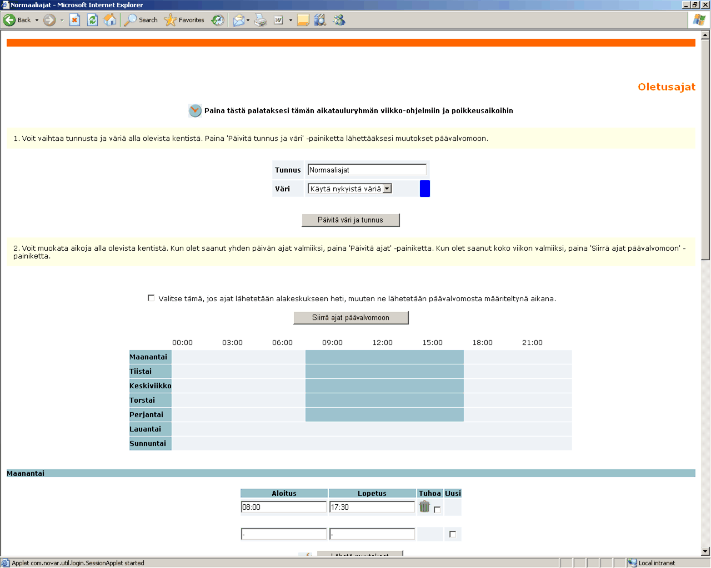

Aikaohjelman normaaliaikojen tarkastelu:
Siirry sivulle, joka sisältää aikatauluryhmän painikkeen, ja napsauta painiketta.
Tai
Napsauta Aikataulut. Ruudulle avautuu erillinen ikkuna, joka sisältää aikatauluryhmät tai aikatauluryhmiä sisältävät kansiot. Valitse haluamasi aikatauluryhmä napsauttamalla. Ellei haluamasi aikatauluryhmä ole näkyvissä, siirry siihen napsauttamalla tarvittavaa kansiota. Kun haluat siirtyä takaisin edelliseen kansioon (ylempitasoiseen), napsauta Siirry kansiotaso ylöspäin.
Kun olet valinnut haluamasi aikatauluryhmän, näkyviin tulee sivu, jossa luetellaan aikatauluryhmän aikavyöhykkeet, ja joka mahdollistaa siirtymisen poikkeusmalleihin ja poikkeusaikoihin.
Napsauta Paina tästä siirtyäksesi tämän aikatauluryhmän viikko-ohjelmiin.
Napsauta sen aikaohjelman tunnusta, joka määrittelee normaalit läsnäoloajat. Se ilmaistaan tekstillä Normaaliajat sarakkeessa Poikkeusaika. Avautuva näyttö on alla näkyvän kaltainen.
